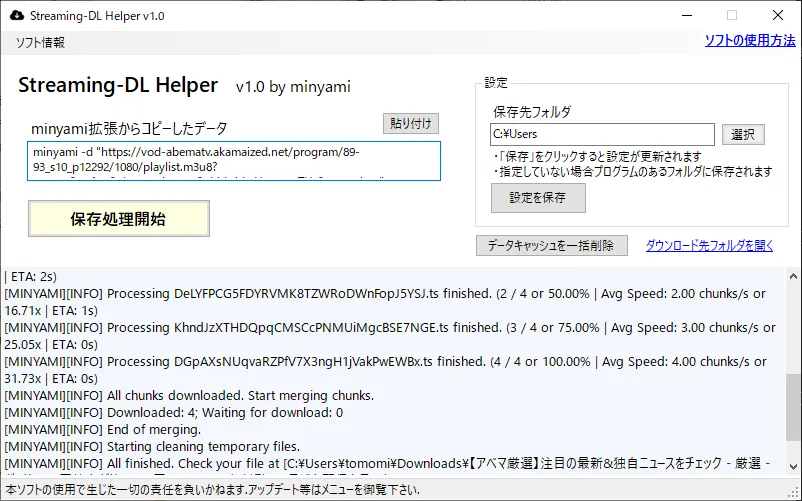
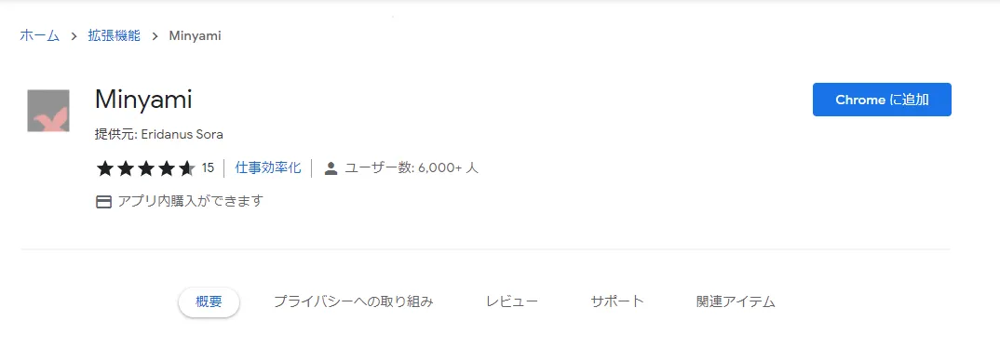
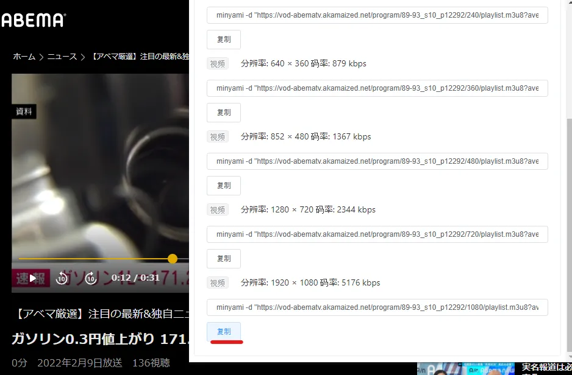
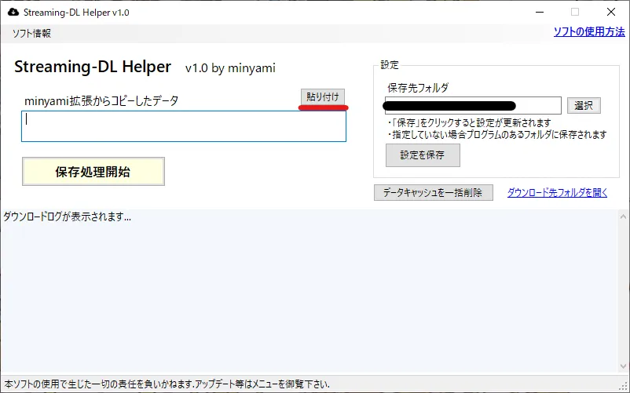

使い方


コマンドをコピー
保存したいストリーミング再生ページにアクセスして,拡張機能アイコンをクリック.「复制」でコピーします.

ソフトで保存処理開始
本ソフトウェアを起動して,コマンドを貼り付けて「処理開始」を押すと保存が開始されます.下部でログを確認可能.
※画像付きの更に詳しい解説は以下リンクからご覧になれます
https://0115765.com/archives/6634
使用上の注意事項
以下の事項を遵守していただきますようお願い申し上げます.- 違法にアップロードされた第三者のコンテンツを違法だと知りながらダウンロードする行為は法律により禁止されています.ご注意下さい.
- 本ソフトウェアはコンテンツの違法ダウンロードを幇助する目的で作成されていません.
- 本ソフトウェアはあくまで「minyamiパッケージのストリーミングダウンロード機能」を誰でも簡単に利用する事を目的としたものですので,ソフトウェア自体にダウンロード機能はありません.
- 本ソフトウェアで生じた一切の損害に関して,開発者は一切の責任を負いかねます.
ご要望・問い合わせ
機能の要望や本ソフトウェア・ページに関するお問い合わせは問い合わせフォームよりお受けしております.